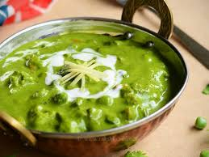

Ingredients
1 cup Carrot, beans, peas (chopped)
½ cup Cauliflower cut into pieces*
2 cups Palak Indian spinach/ spinach
¼ cup Coriander leaves
1 Onion
1.5 teaspoon Chopped garlic
½ teaspoon Chopped ginger
4 Green chilli
8 Cashew nuts
¼ cup Curd plain yogurt, beat smoothly
½ teaspoon Kasoori methi
½ teaspoon Garam masala
⅛ teaspoon Turmeric
½ teaspoon Sugar
Salt
2 teaspoon Butter
Instructions
Heat a pan with butter, add ginger garlic and give it a fry. Add green chilli, cubed onion.
Fry till onion turns transparent. Add spinach, coriander leaves and fry till spinach reduces in volume.
Cool down this mixture and grind with cashew nuts to a smooth paste.
Heat a pan with butter, add cinnamon, clove, cardamom followed by cumin seeds.
Add chopped veggies, salt and ¼ teaspoon sugar. Toss well. Cook covered for 2 minutes in medium flame without changing its colour. The veggies should get cooked but retain it’s crunchiness.
Add ground paste, kasoori methi crushed between palms, garam masala, turmeric, ¼ teaspoon sugar and mix.
Fry for two minutes to cook the spinach and vegetables.
Add well beaten curd in low flame and mix. Adjust water consistency if needed. Heat for 2 minutes in low flame and switch off the flame.